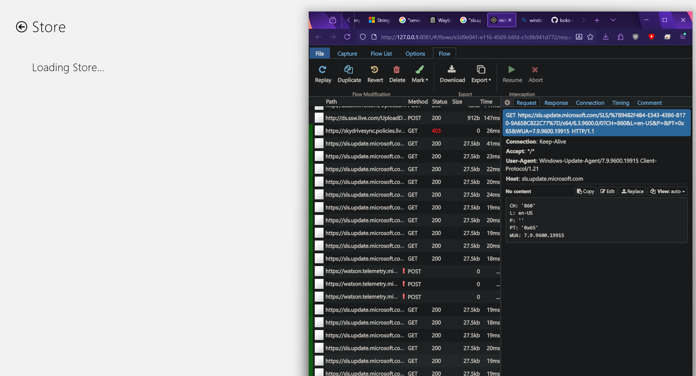

need help with a cab file
So I've been trying to find the cab Windows 8.1's Store requires, but to no avail.
Every time I supply a new cab, it rejects it. I've tried over 15 cab files, but none work.
And if you're wondering where I've been, now you know.
I don't want to spend another month trying. If you have any ideas (or a tested, working cab file), please let me know by leaving a comment.
On the other hand, if you know a way to bypass the cab file, please leave a comment as well.
Any encouragement would also help a lot. I'm a single "developer" with barely any knowledge about Python, so it feels overwhelming.
I know it sounds silly that I keep trying to do something most likely impossible, but I just want to re-experience the Store.
Thanks for reading, and again, any help would be appreciated.